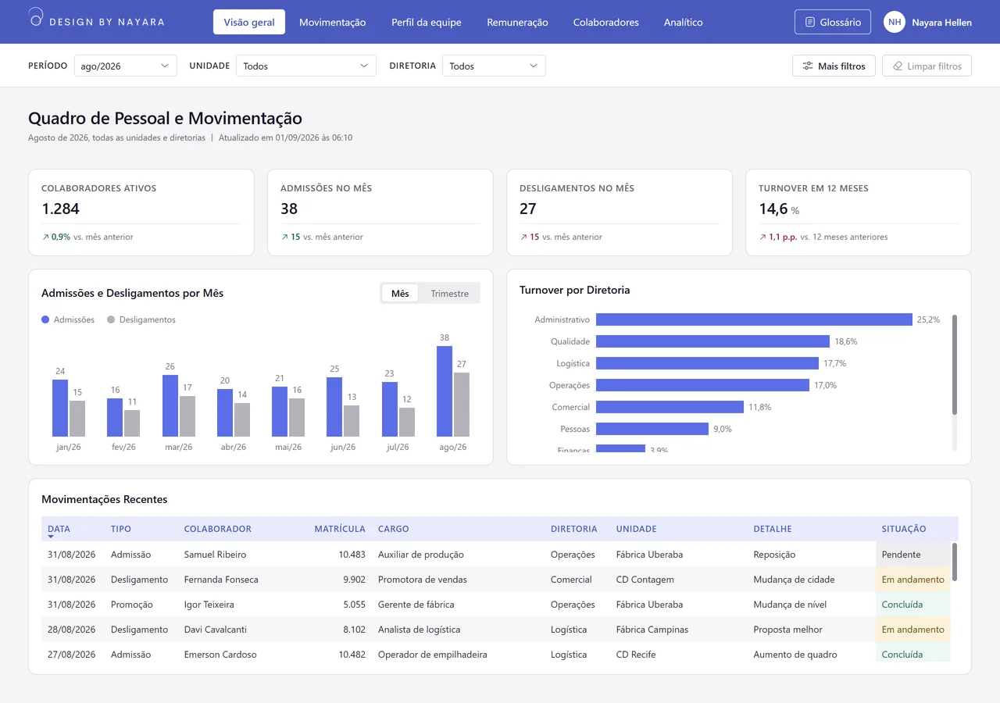
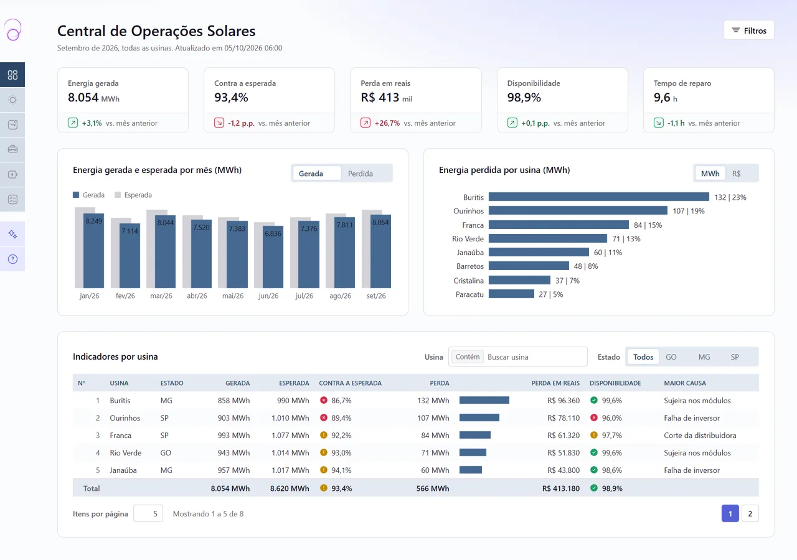

Consultoria dePower BI e Fabric
Sou Nayara Hellen, consultora especializada em Power BI e Microsoft Fabric. Apoio times de dados na criação e na melhoria de relatórios, na definição de padrões visuais e no uso mais eficiente da capacidade do Fabric.
Relatórios selecionados
Todos os relatórios abaixo usam dados fictícios.
Assinaturas de café especial
Receita recorrente, assinantes e cancelamentos mês a mês.
Operação de pronto-socorro
Fluxo de pacientes, triagem e simulador de plantão.

Gestão de pessoas
Quadro ativo, movimentação e folha de pagamento.

Central de operações solares
Geração, disponibilidade e perdas de energia por usina.
Como posso ajudar
Design e UX de relatórios
Pesquisa com quem usa, organização das páginas e desenho visual, do protótipo à entrega.
Modelagem e DAX
Modelo em estrela, medidas confiáveis e números que conferem com a fonte.
Assessment de capacidade do Fabric
Análise do consumo da capacidade e um plano do que otimizar primeiro nos relatórios, nos modelos e nas atualizações.
Padrão visual do time
Tema, componentes e guia para todos os relatórios seguirem a mesma identidade.
Todo trabalho é feito sob medida, com os dados e as perguntas da sua empresa. Não vendo modelo pronto de relatório e não dou cursos nem treinamentos.
Conte sobre o seu projeto
São 12 perguntas, que levam cerca de 3 minutos. As respostas me ajudam a entender o seu cenário antes da nossa conversa, para que ela seja mais objetiva.
1 de 12
Recebi as suas respostas!
Em até dois dias úteis eu volto pelo contato que você deixou, com sugestões de horário para a nossa conversa de 30 minutos, sem custo.